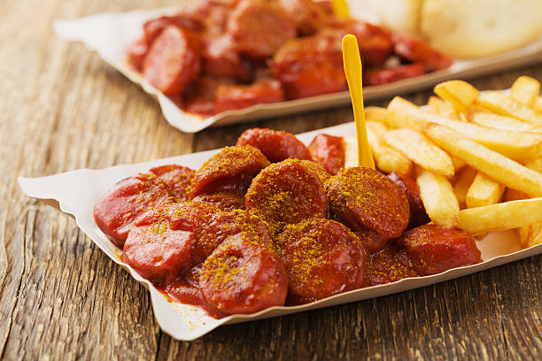

Berkiner Currywurst
Zutaten für
Zutaten für
1
Personen-
1
Saltgurke(n)
-
2
Paprikaschot(n), rot und grün
-
500
g Tomate(n)
-
2
Zwiebel(n)
-
200
g Schafskäse
-
1
Glas Oliven (klein)
-
1
Zitrone(n)
-
125
ml Olivenöl
Salz und Pfeffer
Oregano
Zubereitung
Gurke waschen und ungeschält in dünne Scheiben oder Stücke schneiden. Paprika waschen, entkernen und in dünne Streifen
schneiden. Tomaten waschen und achteln. Zwiebeln schälen und in feine Ringe schneiden. Schafskäse würfeln und mit Oregano
bestreuen. Oliven abgießen und mit Gurke, Paprika, Tomaten, Zwiebeln und Schafskäse in eine Schüssel geben. Olivenöl,
Zitronensaft, Salz und Pfeffer zu einer Sauce verrühren und Über den Salat gießen.
Rezept erstellt von:
 Mehmet
Mehmet